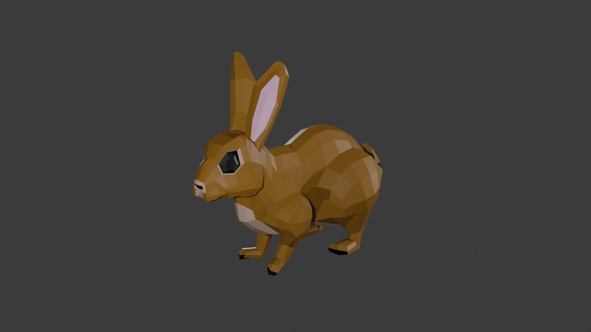
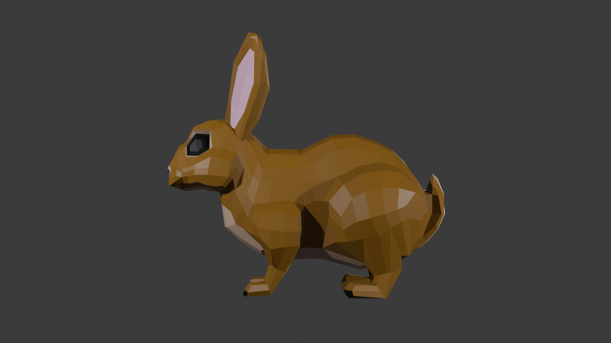
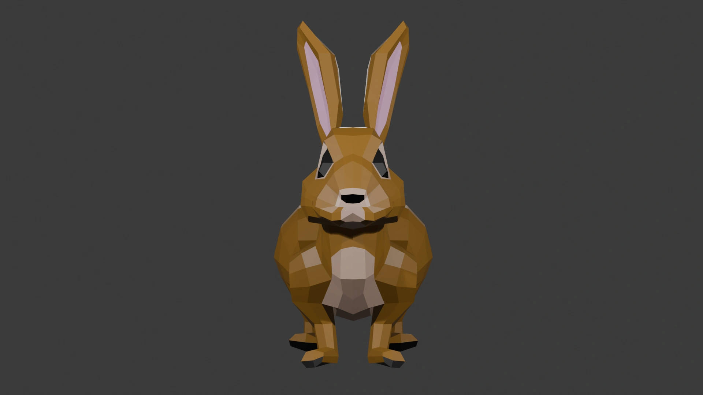
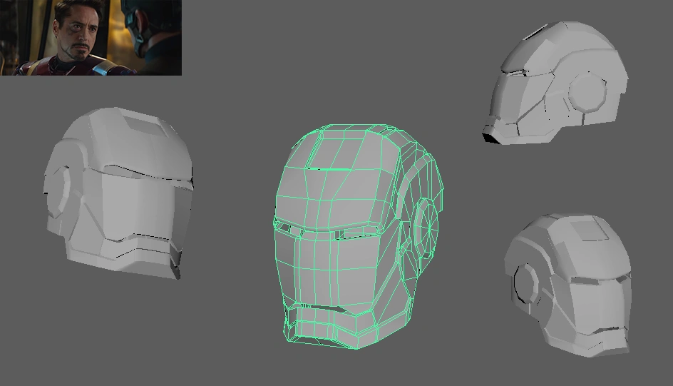
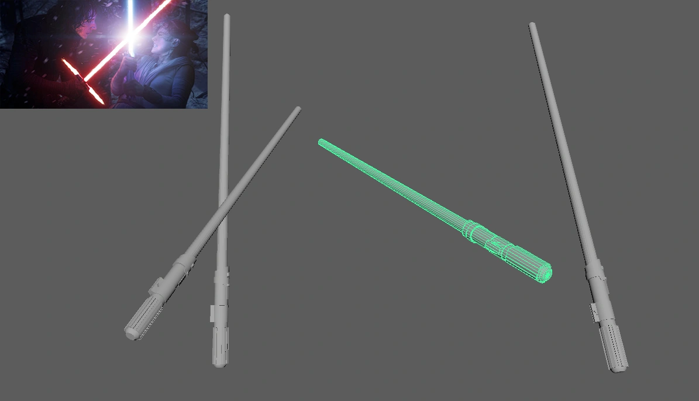
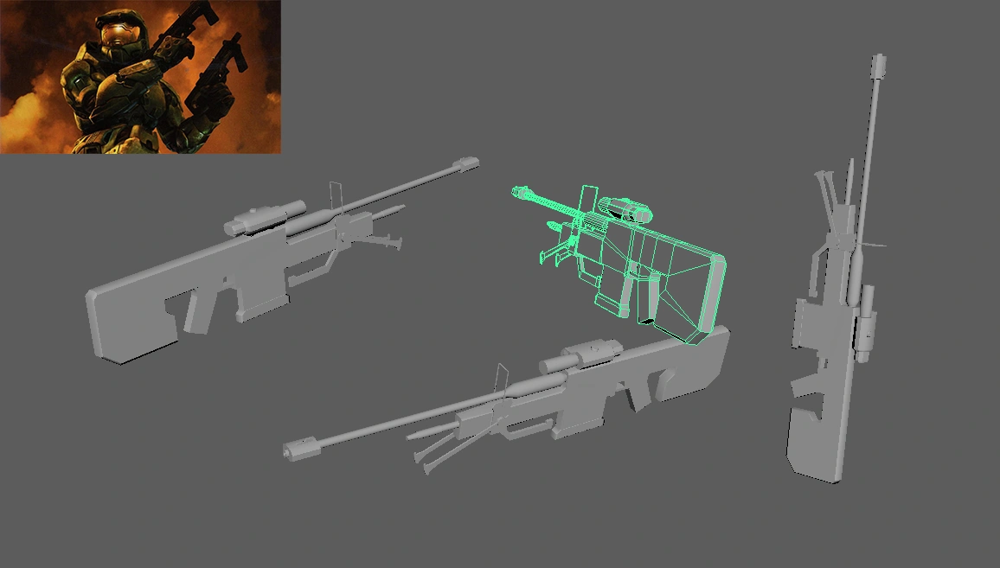
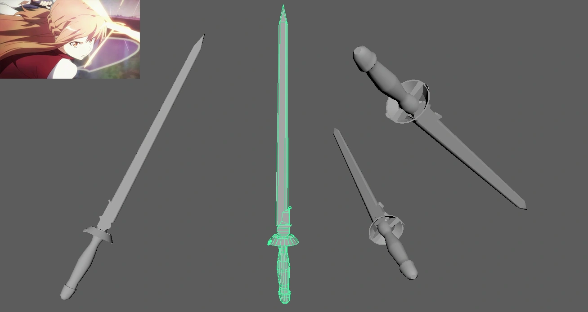
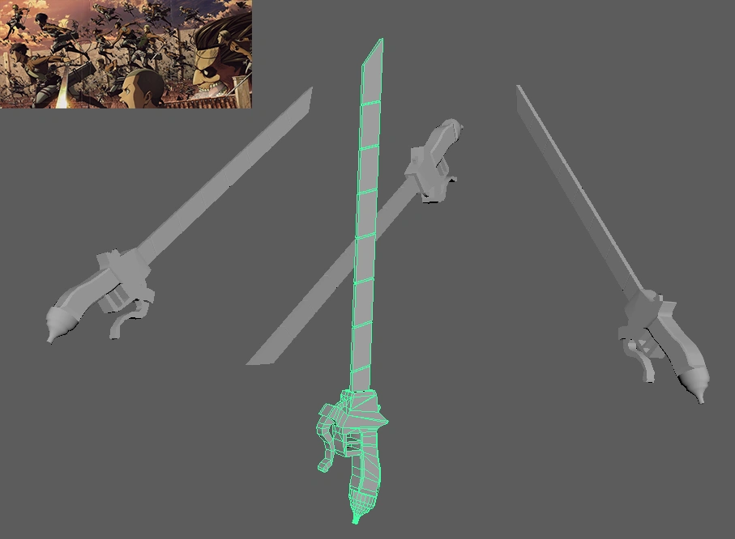
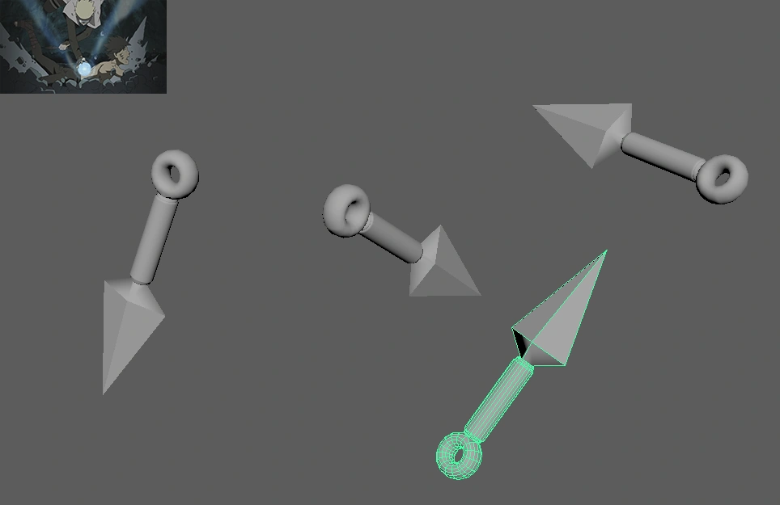
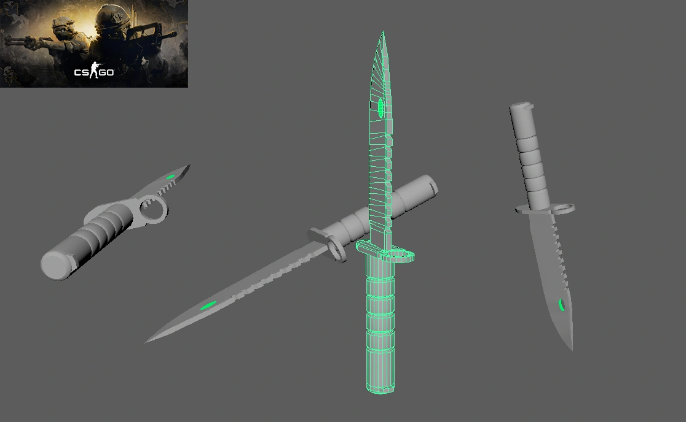

The low poly rabbit model is a small exercise I did while learning and familiarizing myself with Blender. My main goal for this project was to model a simple animal while following best practices for clean topology.
In addition, some other 3D models featured here are directly inspired from movies (Marvel's Iron Man, Star Wars), anime shows (Attack on Titan, Naruto, Sword Art Online ) and videogames (Halo, Counter-Strike).
Blender, Autodesk Maya
Less than 2 weeks each
Solo Artist

Iron-Man is one of my favorite superheroes. I mean the
guy's in a mech suit!
"Genius, billionaire, playboy, philanthropist." -
Tony Stark

I am a big Star Wars fan. I love the characters and laser swords in space are pretty cool! I also once marathoned the first six episodes in 1 and a half days.

The Halo franchise is very dear to me as I grew up replaying the campaign levels multiple times with my cousin.

I also enjoy watching anime. I think Asuna's rapier has a very unique style and shape.

Another favorite is Attack On Titan. I especially like how the characters incorporate their ODM gear and blades with their movement in combat.

Growing up, Naruto was a big part of my childhood. I would watch episodes with my friends and family and even have lengthy chats about the characters. The shinobi world is just so fascinating and how the creators portrayed it through the show is done very well.

CS:GO played a big part in my undergraduate years in
college. It was the game I played the most, with friends
and by myself. I loved the intensity, competitiveness
and teamwork required to play CS:GO at a high level. I
also invested a lot of time into watching pro play and
twitch streamers to learn how players played the game
professionally and incorporate that into my own
gameplay.
The M9 Bayonet is by far one of my favorite knives in
the game.